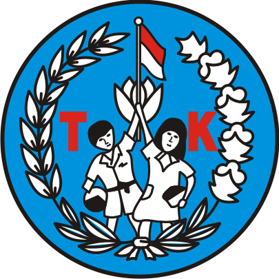
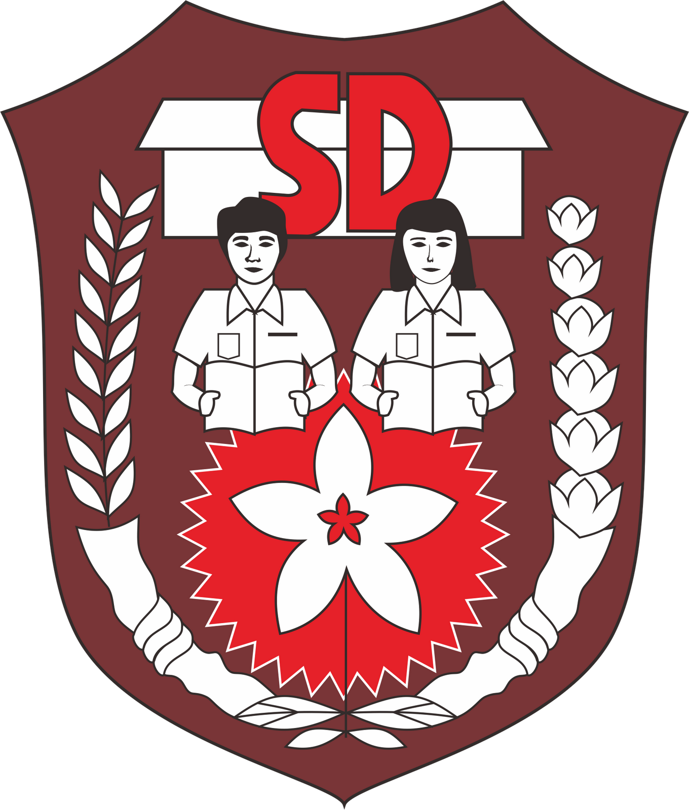
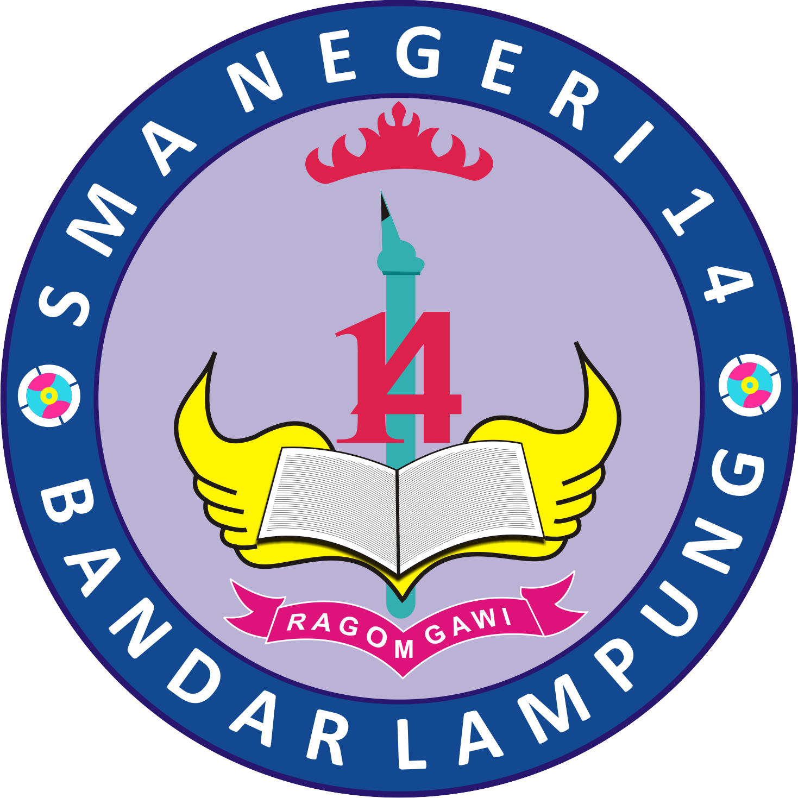

WELCOME TO VISTA's WEBSITE

Taman Kanak - Kanak
TK Yustikarini
Saya dulu memulai pendidikan dari Taman Kanak - Kanak, dan saya bersekolah di TK Yustikarini. Saya bersekolah mulai dari tahun 2006-2007.

Sekolah Dasar
SDN 2 Rajabasa
Selanjutnya saya meneruskan sekolah ke SDN 2 Rajabasa. Disini saya bersekolah dari tahun 2007-2012. Saya sangat senang sekolah disini, karena disini saya mendapat banyak teman teman baru.Sekolah Menengah Pertama
SMP N 28 Bandar Lampung
Setelah itu saya masuk ke SMP N 28 Bandar Lampung. Disini saya merasa kemampuan saya bertambah, karena saya 2 kali mendapatkan Ranking 1 dan juga masuk ke dalam 10 besar Ranking Pararel di sekolah. Dan juga saya masuk ke dalam kelas unggulan, yang mana menjadi salah satu kebanggaan saya.

Sekolah Menengah Atas
SMA N 14 Bandar Lampung
Saya melanjutkan sekolah ke SMA N 14 Bandar Lampung, sekolah SMA saya ini jaraknya sangat dekat dengan sekolah SMP saya dulu, yaitu di daerah BKP Kemiling Permai. Jarak dari rumah ke sekolah juga cukup dekat karena saya tinggal di daerah situ juga.
Perguruan Tinggi
Universitas Lampung
Universitas Lampung (Unila) merupakan Universitas yang saya cita - citakan dari saya SD, karena Unila merupakan salah satu Universitas terbaik di Lampung, oleh karena itu saya belajar dengan giat untuk bisa masuk ke Unila, dan alhamdulillah saya sekarang dapat masuk ke Universitas Lampung melalui jalur SBMPTN.